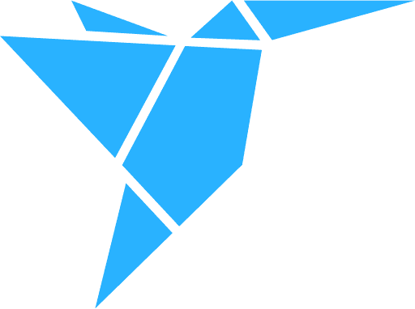
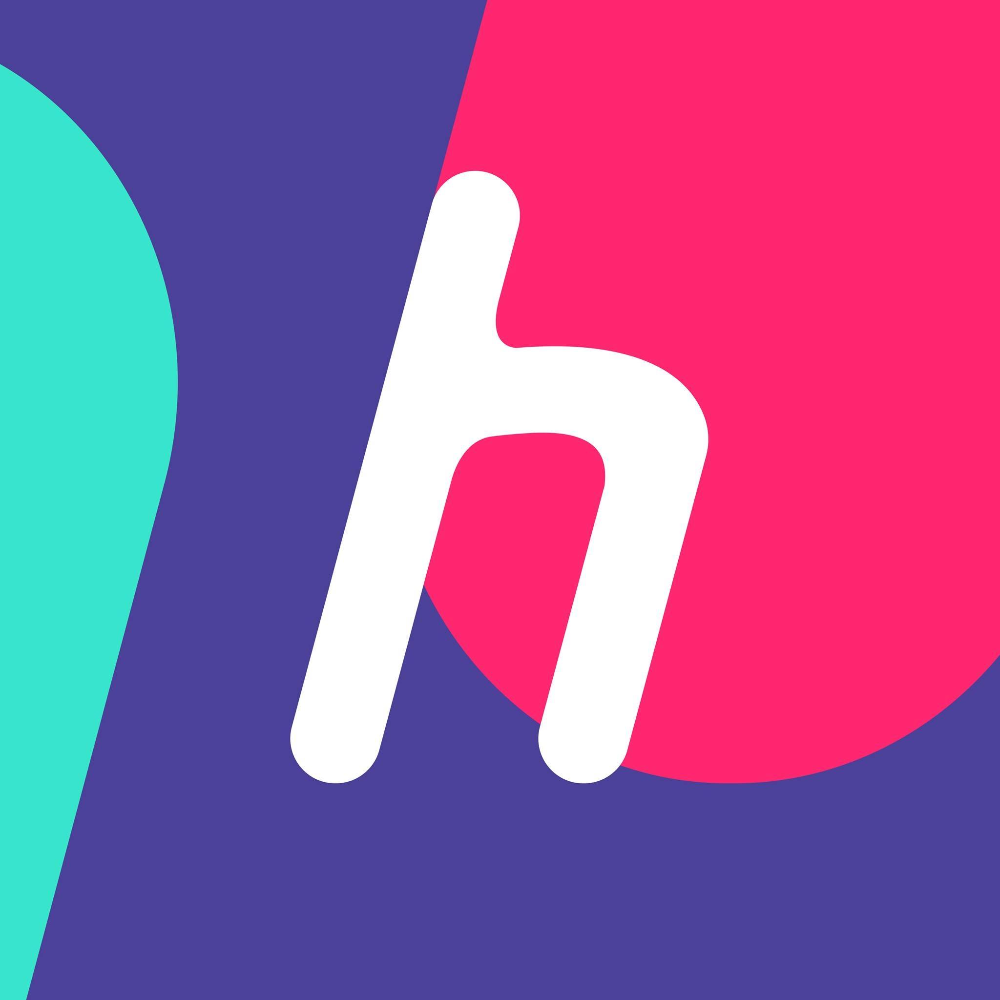
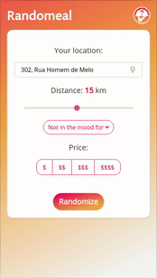
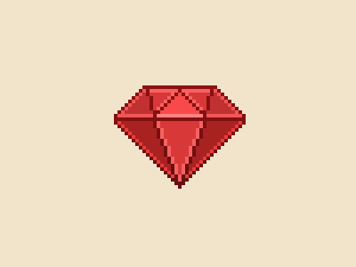

I'm Pedro, a senior full stack engineer with 6+ years building and shipping product for remote teams in e-commerce, SaaS and education.
Ruby on Rails is my core specialty, alongside Node.js and Go on the back end and React / Next.js with TypeScript on the front end. Right now I'm at Teachable, part of the Hotmart group, where I built the new checkout. Before that I led a Next.js migration at SkilldLabs and owned major PostgreSQL upgrades at Jungle Scout. I've also built AI-powered features on top of LLM APIs like OpenAI and Claude.
I started out in graphic design while studying Design and Visual Communication at UFRJ, then turned to code through the Le Wagon bootcamp. That background still shows: I care about UX and work closely with designers and product.
Outside work, I'm a gamer, a tabletop RPG game master, a coffee lover and always hunting for new music. Improving life through code.

Working as a freelancer web developer.
It includes a variety of small work done independently or as part
of short-period contracts.
- Consultant and developer for the
Suavy
group.
-
Data collecting app created for IDFM.
- Brief but rich experience as a fullstack developer for
Quickmail.

Former Spot Educação. Platforms for education and learning.
Previous experience as a fullstack developer at Hyper English Squad, maintaining and creating new features of a large english learning platform using React and Ruby on Rails.

Market intelligence platform and web browser extension for Amazon Marketplace sellers of all kinds.
Previous experience maintaining and deploying features for Orange
and Cobalt Web Apps, as well as the Jungle Scout browser extension
(Chrome & Firefox).
Work was based on developing for a
large-scale platform involving multiple repositories, dealing with
React, Ruby on Rails and Node.js, as well as AWS infrastructure
and Elasticsearch basics. Some of the latest work done at Jungle
Scout involved doing major version upgrades of large scale
PostgreSQL databases, and working with Langchain & Langsmith to
implement OpenAI as an assist Tool inside the web app.

An app for indecisive eaters. +
Randomeal is a progressive web app focused on mobile platforms that picks and displays a random restaurant from anywhere around the world based on filtering user inputs. It's a Rails project developed in 2 weeks through the use of Ruby, HTML, CSS, Javascript, APIs and more. It's a work in progress, a MVP that does not work in its full potential due to lack of financial investiment that our team can't handle right now. You can check it here.

A platform to make and manage restaurant reservations. +
Rioserve is an airbnb-like platform for clients and owners, that lets the user make and manage restaurant's reservations. It's a Rails app developed in 1 week through the use of Ruby, HTML, CSS, Javascript, different APIs, and more. You can check it here.
Small web app to increase combat pacing while playing Pokémon Tabletop United. +
PTU Damage Calculator is a small and quick project to solve one of the problems me and my friends went through while playing tabletop RPG. Manually calculating combat statistics and values when playing Pokémon Tabletop United can be a boring time consuming task, so I created this calculator. It's a React app developed in an hour through the use of ReactJS and CSS. You can check it here.

A micro app that runs as a bot, it periodically makes a call to an API, get a response, save it in Json format and send it to an online storage. +
Micro App API IDFM is a Rails API that runs as a bot, created as a freelance job for Groupement Lacroix & Savac. It's an app developed with Ruby that through the use of tasks and CRON jobs make a call to an API every five minutes, save the response as a Json file, send it to an Amazon S3 Bucket and then delete the file locally. You can check that test version with no sensible data right here.
”It has been an outmost pleasure to work with Pedro, who impressed us from Day 1 of the bootcamp. He is a problem solver, a hard-worker and has intuive programming talent. If you give him a challenge he won't walk away until he solves it!”
Irina Popa, Lead Teacher at Le Wagon & Developer
“Extremely outgoing and a tech savvy, Pedro was the leader of the pack and the glue that kept everyone together. I can only wish him the best after the bootcamp, which is sure to follow.”
Andre Ferrer, Lead Teacher at Le Wagon & Developer
“Pedro is a great person to have on your team. He is highly competent, also a quicklearner, he has a very important critical view for any project, always trying to see the user's point of view, in addition to being very good with people. Each moment we worked together on a project was a reciprocal learning experience.”
Vitor Tavares, Engineer & Fullstack Developer at Jobhub
“A great team player, Pedro was a nice addition to the projects in which we worked together. Specially when dealing with front-end, Pedro has the mindset needed to quickly adapt and learn new skills.”
Breno Romeiro, Freelancer & Front-end Developer at Stone
Maybe you came here right away, that's fine too!
If you want to talk about freelance work, a job opportunity, or maybe
discuss some ideas, feel welcomed to contact me. I'm always excited to
get to know new people and opportunities!
You should know, I love sharing music, so
I may have some for you!